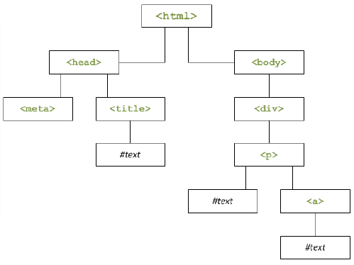

Javascript
ISEN Brest - CIR1
- Langage de programmation de scripts
- Langage interprété
- Langage orienté objet (un petit peu)
- Création en 1995 par Netscape puis Sun
- Objectif : interactivité dans les pages Web : exécution côté client
- Code directement écrit dans la page Web (pas de confidentialité)
Motivations
- Instructions de programmation directement dans le code HTML
-
Exécution de code côté client
- Améliorer l'interactivé (temps de réponse plus court)
- Améliorer les débits réseaux (limiter les requêtes
- Proposer des pages dynamiques (animations, personalisation)
Applications possibles
- Tester la saisie d'un formulaire
- Programmer des actions en fonction d'un évènement
- Effectuer un calcul sans passer par le serveur
- Modier les éléments de la page HTML
- ...
Avantages et inconvénients
Points forts
- Langage de programmation structuré
- Enrichissement du HTML
- Pages dynamiques : partage les mêmes objets DOM que HTML
- Gestion d'évènements
Avantages et inconvénients
Limitations
- Langage de script dépendant du HTML
- Pas véritablement langage orienté objet (ni héritage , ni polymorphisme)
Normalisation
Langage normalisé par ECMA International, Standard : ECMAScript (ECMA-262)
- ECMAScript Edition 1, Juin 1997, 1re édition
- ECMAScript Edition 2, Juin 1998, Modifications rédactionnelles pour se conformer au standard international ISO/CEI-16262.
- ECMAScript Edition 3, Décembre 1999, Expressions rationnelles plus puissantes, amélioration de la manipulation des chaînes de caractères, nouvelles instructions de contrôle, gestion des exception avec les instructions try/catch, formatage des nombres.
- ECMAScript Edition 4 (ES4), Édition abandonnée
Normalisation
- ECMAScript Edition 5 (ES5), Décembre 2009 Clarification des ambiguïtés de la 3e édition, accesseurs, introspection, contrôle des attributs, fonctions de manipulation de tableaux supplémentaires, support du format JSON, mode strict pour la vérification des erreurs.
- ECMAScript Edition 6 (ES6), Juin 2015, Modules, classes, portée lexicale au niveau des blocs, itérateurs et générateurs, promesses pour la programmation asynchrone, patrons de destructuration, optimisation des appels terminaux, nouvelles structures de données (tableaux associatifs, ensembles, tableaux binaires), support de caractères Unicode supplémentaires dans les chaînes de caractères et les expressions rationnelles, possibilité d'étendre les structures de données prédéfinies.
- ...
Généralités
Intégration Javascript dans le HTML
-
Lien vers un fichier externe (de préférence dans la balise
<head>)<script type="text/javascript" src="fichier.js"> -
Déclaration du code dans le fichier HTML
<script type="text/javascript"> code javascript </script>
Appel d’une fonction Javascript dans le HTML
-
Utilisation dans une URL
<a href="javascript:instructionJavascript ;">Texte</a> -
Attributs de gestion des évènements
<balise onEvenement="instructionJavascript">...</a>
Code alternatif
Il est possible de rajouter une balise comprenant un texte qui s’affichera uniquement dans le cas où le navigateur ne possède par d’interpréteur de script
<noscript> Message à afficher en cas d’absence de Javascript </noscript>
Commentaires
- Mêmes conventions qu’en C/C++
-
Mettre une ligne en commentaire
// Cette ligne sera ignorée -
Mettre une partie du code en commentaire
/* Toutes les lignes comprises entre ces 2 repères seront ignorées */
Caractères spéciaux et chaînes de caractères
Insertion d’un caractère spécial dans une chaîne de caractères sans qu’il soit considéré comme un caractère de contrôle précédé d’un antislash \
texte = 'Avez-vous l\'heure ?';
ou
texte = "Avez-vous l’heure ? ";
Concaténation de chaînes de caractères
Utilisation de l’opérateur +
texte = "Avez-vous" + "l’heure ? ";
Syntaxe
Caractéristiques
- Variables faiblement typées
- Opérateurs et instructions identiques au C/C++/Java
- >Méthodes :
- Globales (associées à tous les objets)
- Fonctions définies par le programmeur
- Séparateur d’instruction : ';'
Opérateurs
Arithmétiques
| Opérateur | Dénomination | Effet |
|---|---|---|
+ |
Addition | Ajoute 2 valeurs |
- |
Soustraction | Soustrait 2 valeurs |
* |
Multiplication | Multiplie 2 valeurs |
/ |
Division | Divise 2 valeurs |
% |
Modulo | Reste de la division entière |
Incrémentation/décrémentation
| Opérateur | Dénomination | Effet |
|---|---|---|
++ |
Incrémentation | Augmente d’une unité la variable |
-- (2 signes -) |
Décrémentation | Diminue d’une unité la variable |
Logiques
| Opérateur | Dénomination | Effet |
|---|---|---|
&& |
Et | Vérifie que toutes les conditions sont réalisées |
|| |
Ou | Vérifie qu’une des conditions sont réalisées |
! |
Non | Inverse l’état de l'expression booléenne |
Affectation
| Opérateur | Effet |
|---|---|
= |
Affecte l’opérande de gauche à la valeur de l’opérande de droite |
+= |
Opérande de gauche = opérande de gauche + opérande de droite |
-= |
Opérande de gauche = opérande de gauche - opérande de droite |
*= |
Opérande de gauche = opérande de gauche * opérande de droite |
/= |
Opérande de gauche = opérande de gauche / opérande de droite |
%= |
Opérande de gauche = opérande de gauche % opérande de droite |
Comparaisons
| Opérateur | Dénomination | Effet |
|---|---|---|
== |
Égalité | Retourne true en cas d’égalité |
!= |
Différence | Retourne true en cas de différence |
< |
Inférieur | Retourne true si la valeur est strictement inférieure |
<= |
Inférieur ou égal | Retourne true si la valeur est inférieure ou égale |
> |
Supérieur | Retourne true si la valeur est strictement supérieure |
>= |
Supérieur ou égal | Retourne true si la valeur est supérieure ou égale |
Comparaisons
En javascript il existe === (pas de conversion de type pour tester l'égalité) :
==égalité faible===égalité stricte
Les variables
Déclaration :
var nom[=valeur];
- Déclaration optionnelle mais recommadée
- Pas de déclaration : déclaration implicite
- Déclaration avec var : déclration explicite
- '
undefined' si aucune valeur à l'intialisation
- Aucun type à définir
- Typage dynamique
- Sensible à la casse
Visibilité des variables :
- Globale : déclaration explicite en dehors de toute fontion, visible dans tout le script
- Locale : déclaration explicite dans une fonction visible uniquement dans cette fonction
Les types de données possibles sont les suivants :
- Nombre (entier uu à virgule)
- Chaîne de caractères
- Booléens
- '
null'
Conditions
if(condition) {
instructions
} [ else if(condition) {
instructions
}] [ else {
instructions
}]
Conditions
switch(variable) {
case 'valeur1':
instructions
break;
...
default:
instructions
break;
}
Boucles
for(i=0; i<N; i++) {
instructions
}
for(p in object) {
instructions
}
Boucles
while(condition) {
instructions
}
do {
instructions
} while(condition)
Fonctions
Déclaration
function nom (arg1, ..., argN) {
instruction
[ return valeur;]
}
Appel de la fonction
nom();
Remarques
- Arguments et valeur de retour non typés
-
Passage de paramètres
- par valeur pour un type natif (nombre, chaîne de caractères,..)
- par référence pour les objets
Les tableaux
Déclaration
var nom = new Array([dimension]);
var nom = new Array(val1, val2, ..., valN);
- Accession avec
[](tableau[i]) - Les éléments peuvent être de type différents
- La taille s'adapte de façon dynamique
- Propriété :
lenght - Méthodes :
reserve(),sort(),toString(),push(element),...
Tableaux associatifs
Tab['nom']Tab.nom
Aperçu objet
Objet window
- Objet de référence
-
Contient les autres objets compasants la page Web
- Objet
document: la page elle-même - Objet
location: lieu de stockage de la page - Objet
history: pages visitées précédemment
- Objet
-
Méthodes de l'objet
- Boites de dialogue :
alert(),confirm(),prompt() - Ouverture et fermeture de fenêtres :
open(),close()
- Boites de dialogue :
Objet document
- Permet d'accéder aux éléments dont est composé la page Web
- Racine de la hiérarchie de la page HTML
-
Point d'accés pour :
- Modifier des éléments de la page Web
- Vérifier les valeurs des éléments de la page Web (exemple : saisie d'un formulaire)
Objet location
- Permet de connaître les élément de l’URL de la page et de rediriger vers une autre page
Méthodes couramment utilisées
Boites de dialogue
- Affichage au premier plan d'une boite suite à un évènement
- Entraîne une action de la part de l'utilisateur
- Méthodes de l'objet
Window
alert() : message à l'intention de l'utilisateur
alert(nom_de_la_variable);
alert('Chaîne de caractères');
alert('Chaîne de caractères ' + nom_de_la_variable);
confirm() : demande à l'utilisateur de confirmer ou non
confirm('Chaîne de caractères');
prompt() : permet de récupérer une information venant de l'utilisateur
variable = prompt(‘Posez ici votre question‘, 'Chaîne par défaut');
Fenêtres
Ouverture d'une nouvelle fenêtre
window.open("URL","nom_de_la_fenetre","options_de_la_fenetre");
<a href="javascript:window.open('URL', 'nom_de_la_fenetre',
'options_de_la_fenetre')">Lien vers URL</a>
Redirection
Méthodes de l'objet location
-
replace(url): charge l'URL spécifiéewindow.location.replace("URL","nom_de_la_fenetre"); -
reload(): rafraichit la pagewindow.location.reload();
Programmation évènementielle
| Evènement | Appel | Description |
|---|---|---|
| Abort | onAbort |
Lors d’une interruption de chargement |
| Blur | onBlur |
Lorsque l'élément perd le focus |
| Change | onChange |
Lorsque l’utilisateur modifie le champ de données |
| Click | onClick |
Lorsque l’utilisateur clique sur l’élément |
| dblclick | onDblclick |
Lorsque l’utilisateur double-clique sur l’élément |
| dragdrop | onDragdrop |
Lorsque l’utilisateur effectue un glisser-déposer sur la fenêtre |
| Error | onError |
Lorsqu’une erreur apparaît durant le chargement de la page |
| Focus | onFocus |
Lorsque l’élément prend le focus |
| Keydown | onKeydown |
Lorsque l’utilisateur appuie sur une touche |
| Kepress | onKeypress |
Lorsque l’utilisateur maintient sur une touche enfoncée |
| Keyup | onKeyup |
Lorsque l’utilisateur relâche une touche |
| Evènement | Appel | Description |
|---|---|---|
| Load | onLoad |
Lorsque le navigateur charge la page en cours |
| MouseOver | onMouseOver |
Lorsque l’utilisateur positionne la souris au dessus de l’élément |
| MouseOut | onMouseOut |
Lorsque le curseur de la souris quitte l’élément |
| Reset | onReset |
Lorsque l’utilisateur efface les données d’un formulaire |
| Resize | onResize |
Lorsque l’utilisateur redimensionne la fenêtre |
| Select | onSelect |
Lorsque l’utilisateur sélectionne un texte dans un champ de type ‘text’ ou ‘textarea’ |
| Submit | onSubmit |
Lorsque l’utilisateur soumet un formulaire |
| Unload | onUnload |
Lorsque le navigateur quitte la page en cours |
Fonctionnement
- Le navigateur intercepte les évènements et agit en conséquence
-
Evènements associées aux balises HTML
<a href="" onclick="alert(’Merci !’) ;"> - Tous les évènements ne peuvent pas s’appliquer à tous les éléments !!!
DOM (Document Object Model)
Noyau fondamental
Présentation
- API pour le HTML/XHTML et le XML
-
La mise en oeuvre de l’API permet de :
- Construire un document
- Naviguer à l’intérieur d’un document
- Ajouter, modifier ou supprimer des éléments du document
- Recommandation du W3C
- Uniformisation du moyen de manipuler un document Web à travers des scripts
Représentation
Structure logique du document sous forme d’arbre
<!doctype html>
<html>
<head>
<meta charset="utf-8"/>
<title>Le titre de la page</title>
</head>
<body>
<div>
<p>
Un peu de texte <a>et un lien</a>
</p>
</div>
</body>
</html>
Représentation
Structure logique du document sous forme d’arbre
Standard W3C
- http://www.w3.org/TR/#tr_DOM
- DOM Level 1 : 1998, HTML4
- DOM Level 2 : 2000
- DOM Level 3 : 2004
- DOM Level 4 : 2015
Interface Document
- Représente le document HTML
- Racide de l'arbre du document
| Attribut | Signification |
|---|---|
doctype |
DTD associée au document |
implementation |
Type d’implémentation : langage du document |
documentElement |
Accès direct au premier élément du document (ex : en HTML accès àl’élément <html>) |
Interface Document
| Méthodes | Paramètres | Action |
|---|---|---|
createElement |
tagName |
Création d’un élément de type ‘tagName’ |
createTextNode |
data |
Création d’un noeud texte contenant la chaîne da caractères ‘data’ |
getElementById |
elementId |
Renvoie l’élément dont l’id est ‘elementId’ |
getElementById |
tagname |
Renvoie tous les éléments ‘tagname’ dudocument dans un objet de type ‘NodeList’ |
... |
... |
... |
Interface Node
- Représente un noeud de l’arbre du document
- Les attributs dépendent du type de noeud (Element, Attr, Text, Comment, Document,…)
| Attribut | Signification |
|---|---|
doctype |
DTD associée au document |
nodeValue |
Type d’implémentation : langage du document |
nodeType |
Accès direct au premier élément du document (ex : en HTML accès àl’élément <html>) |
parentNode |
DTD associée au document |
childNodes |
Type d’implémentation : langage du document |
firstChild, lastChild |
Premier et dernier enfant |
previousSibling, nextSibling |
Noeud précédent et noeud suivant |
... |
... |
Interface Node
| Méthodes | Paramètres | Action |
|---|---|---|
insertBefore |
newChild, refChild |
Insertion du noeud ‘newChild’ avant le noeud existant ‘refChild’ |
appendChild |
newChild |
Ajoute le noeud ‘newChild’ à la fin de la liste des enfants du noeud courant |
removeChild |
oldChild |
Supprime le noeud ‘oldChild’ de la liste des enfants du noeud |
replaceChild |
newChild, oldChild |
Remplace le noeud enfant oldChild par newChild |
hasChildNodes |
|
Détermine si le noeud contient des enfants |
... |
... |
... |
Interface NodeList
- Liste de noeuds
| Attribut | Signification |
|---|---|
lenght |
Nombre de noeuds dans la liste |
Interface NodeList
| Méthodes | Paramètres | Action |
|---|---|---|
item |
index |
Renvoie le indexème item de la liste |
Interface NamedNodeMap
- Collections de noeuds repérés par leur nom
| Attribut | Signification |
|---|---|
lenght |
Nombre de noeuds dans la map |
Interface NamedNodeMap
| Méthodes | Paramètres | Action |
|---|---|---|
getNamedItem |
name |
Renvoie le noeud spécifié par ‘name’ |
setNamedItem |
Arg (un noeud) |
Ajoute le noeud en utilisant le ‘nodeName’ attribut |
removeNamedItem |
name |
Supprime le noeud spécifié par ‘name’ |
item |
|
Renvoie le indexème item de la map |
... |
... |
... |
Autres interfaces
- Interface ‘CharacterData’ : attributs et méthodes supplémentaires spécialisé pour les noeuds contenant des chaînes de caractères (héritage de ‘Node’)
- Interface ‘Attr’ : Attribut dans un Element (héritage de ‘Node’)
- Interface ‘Element’ : un Element (héritage de ‘Node’)
- Interface ‘Text’ : partie textuellle d’un Element (héritage de ‘Node’)
- ...
DOM pour le HTML
Interface HTMLDocument
- Equivalent de l’interface Document mais spécifique aux documents HTML
| Attribut | Signification |
|---|---|
title |
Titre du document spécifié par l’élément <title> dans la partie <head> |
referrer |
URI de la page précédente |
URL |
URI du document |
body |
Element <body> |
images |
Collection de tous les éléments <img> |
links |
Collection de tous les éléments <area> et <a> dont l’attribut ‘href’ est spécifié |
forms |
Collection de tous les éléments <form> |
anchors |
Collection de tous les éléments <a> ayant un attribut ‘name’ |
cookie |
Cookies associés au document |
... |
... |
Interface HTMLDocument
| Méthodes | Paramètres | Action |
|---|---|---|
getElementById |
elementId |
Renvoie l’élément dont l’id est ‘elementId’ |
getElementByName |
elementName |
Renvoie une collection d’élément dont l’attribut ‘name’ vaut ‘elementName’ |
... |
... |
... |
Interface HTMLElement
- Equivalent de l’interface Element mais spécifique aux documents HTML
| Attribut | Signification |
|---|---|
id |
L’id d’un élément |
title |
L’attribut title de l’élément |
lang |
L’attribut lang de l’élément |
dir |
L’attribut dir de l’élément (direction du texte) |
className |
L’attribut class de l’élément |
Interface HTMLFormElement
- Formulaire : élément <form>
| Attribut | Signification |
|---|---|
elements |
Collection de tous les éléments de contrôle du formulaire |
lenght |
Nombre d’éléments de contrôle |
name |
Nom du formulaire |
acceptCharset |
Liste des encodages de caractère acceptés par le serveur |
action |
Programme en charge de traiter les données |
enctype |
Forme de soumission du formulaire |
method |
Méthode HTTP utilisée pour soumettre le formulaire |
Interface HTMLFormElement
| Méthodes | Paramètres | Action |
|---|---|---|
submit |
|
Soumettre le formulaire |
reset |
|
Effectue un reset (remise à 0 du formulaire) |
Interface HTMLSelectElement
- Menu déroulant : élément <select>
| Attribut | Signification |
|---|---|
type |
Type de contrôle créé |
selectedIndex |
Index de l’option sélectionné |
value |
Valeur courante du select |
lenght |
Nombre d’options dans le select |
form |
Formulaire contenant le select |
options |
Collection des éléments options contenus dans le select |
disabled |
Désactiver le contrôle |
multiple |
Si true : plusieurs options peuvent être sélectionnées |
name |
Attribut ‘name’ du select |
size |
Nombre de lignes visibles |
tabIndex |
Index représentant la position de l’element |
Interface HTMLSelectElement
| Méthodes | Paramètres | Action |
|---|---|---|
add |
element, before |
Ajoute un nouvel élément <option> avant l’élément before |
remove |
|
Supprime l’option dont l’index est précisé |
blur |
|
Retire le focus de l’élément |
focus |
|
Donne le focus à l’élément |
Interface HTMLOptionElement
- Menu déroulant : élément <option>
| Attribut | Signification |
|---|---|
form |
Formulaire contenant l’option |
defaultSelected |
Mémorise la valeur sélectionnée initialement |
text |
Texte contenu dans l’option |
index |
Index de l’option (contenu dans un select) |
disabled |
Désactiver le contrôle |
label |
Label dans le cas d’un menu hiérarchique |
selected |
Sélection de l’option |
value |
Valeur de contrôle |
Interface HTMLInputElement
- Formulaire : élément <input>
| Attribut | Signification |
|---|---|
defaultVallue |
Mémorise la valeur initiale |
defaultChecked |
Mémorise la valeur initiale de l’attribut ‘checked’ (pour radio ou checkbox) |
checked |
Décrit si le bouton radio ou la checkbox est cochée |
disabled |
Désactiver le contrôle |
readOnly |
Contrôle en lecture seule ( pour les types texte ou password) |
size |
Taille de la zone (dépend du type) |
type |
Type de contrôle |
value |
Valeur du champ |
... |
... |
Interface HTMLInputElement
| Méthodes | Paramètres | Action |
|---|---|---|
blur |
|
Retire le focus de l’élément |
focus |
|
Donne le focus à l’élément |
select |
|
Sélectionne le contenu du champs (éléments ‘text’, ‘file’ et ‘password’) |
click |
|
Simule un click de la souris (éléments ‘button’, ‘checkbox’, ‘radio’, ‘reset’, ‘submit’) |
Autres interfaces liées à HTML
HTMLCollection: liste de noeuds HTMLHTMLOptionsCollection: liste de noeuds d’éléments options (dans un select)- Une pour chaque élément HTML
- ...
DOM Style CSS
Interface StyleSheet
- Pour insérer des feuilles de style
| Attribut | Signification |
|---|---|
disabled |
False si la feuille de style est appliquée sinon true |
href |
Equivalent du href de l ’élément <link> |
media |
Equivalent de l’attribut media de l ’élément <link> |
type |
Langage utilisé (text/CSS souvent) |
... |
... |
Interfaces CSS
- Interface
CSSStyleSheetfeuille de style CCS (possibilité d’ajouter, supprimer des règles,…) - Interface
CSSRuleList: liste de règles CSS - Interface
CSSRule: règle CSS (classique ou règle @) - Interface
CSSStyleRule: règle CSS classique - Interface
CSSMediaRule: règle CSS @ - Interface
CSSFontFaceRule: règle CSS @font-face : description de la police de caractères - ...
Interface CSS2Properties
- Référence pour connaître les valeurs des propriétés CSS
- Ces propriétés n’ont pas forcément le même nom en CSS et en DOM
- Documentation : Dom Level 2 Style
DOM par l'exemple
Les plus utilisés pour le HTML
Récupérer un noeud du DOM :
-
Object
Document:document.getElementById(elementId)document.getElementByTagName(tagName)
-
Object
NodeList:lengthitem(index)
Les plus utilisés pour le HTML
Modifier le contenu d’un noeud :
-
Object
Document:document.createElement(balise)
-
Object
Node:‘noeud’.appendChild(newChild)‘noeud’.replaceChild(newChild, oldChild)‘noeud’.removeChild(oldChild)
Les plus utilisés pour le HTML
Exemple : ajout d'un nouveau paragrapyhe à un bloc div
var pEl=document.createElement("p");
var texte=document.createTextNode("Fin du bloc");
pEl.appendChild(texte);
document.getElementById("div2").appendChild(pEl);
Les plus utilisés pour le HTML
Parcours d'un arbre avec l'objet Node :
‘noeud’.parentsNode‘noeud’.ChildNodes[ ]‘noeud’.firstChild‘noeud’.lastChild‘noeud’.previousSibling‘noeud’.nextSibling‘noeud’.nodeType
Les plus utilisés pour le HTML
Exemple : fonction récursive de comptage des éléments du document
function compteN(noeud) {
var nb_noeud = 0;
if(noeud.nodeType == 1)
nb_noeud++;
for(var i=0; i<noeud.childNodes.length; i++) {
nb_noeuds += compteN(noeud.childNodes[i]);
}
return nb_noeud;
}
Les plus utilisés pour le HTML
Tester un formulaire
- Récupérer le noeud :
moninput = document.getElementById(inputId); - Récupérer le texte du champ :
valeur = moninput.value; - Tester la valeur :
if (valeur == ‘Ceci est un test’) { return 1; }
Les plus utilisés pour le HTML
Exemple : vérification que le champ ‘prénom’ est bien rempli
if (document.getElementById(‘prenom’).value==‘’) {
alert(‘Veuillez saisir votre prénom’);
return false;
}
Exemples de modification
Exemples de modification
d'un attribut
<a href="aide.html"><img name="img_aide" src="help_off.gif" /></a>
<script>
document.img_aide.onmouseover= function(){this.src="help_on.gif";};
document.img_aide.onmouseout= function(){this.src="help_off.gif";};
</script>
Exemples de modification
Texte HTML contenu dans un élément (attention : innerHTML à connaître mais à éviter)
document.links[0].innerHTML="Page d'aide";
Exemples de modification
Style CSS
document.forms[0].style.backgroundColor="red";
Gestion des erreurs
- En cas d’erreur fatale, le script entier n’est pas exécuté : pas de message incompréhensible pour l’utilisateur
- Recherche d’erreurs (débogage) : console d’erreurs dans Firefox
- Pour afficher des erreurs : possibilité d’utiliser l’évènement onError
function traitement_erreur(msg, url, line) {
alert("Erreur:"+msg+" dans "+url+" ligne"+line);
return true;
}
window.onerror=traitement_erreur;
Des questions ?